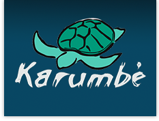

Tortuga Laúd
Nombre Científico
Distribución
Hábitat
Alimentación
Reproducción
Longevidad
Población
Grupos Protectores
Para Saber Más...
Nombre Científico
Científicamente denominada Dermochelys coriácea, es la única especie que sobrevive del género Dermochelys. Se reconoce por su caparazón blando y carne grasa.
Distribución
Las tortugas laúd viven en casi todos los océanos del mundo, aventurándose mucho más al norte o sur que otras tortugas marinas gracias a su peculiar sistema de regulación de la temperatura corporal.
En los meses de verano, las tortugas laúd son más comunes en la zona que va desde el golfo de Maine al norte hasta Florida en el sur. Han sido observadas también al norte del golfo de San Lorenzo, en Canadá.
Las tortugas laúd del océano Pacífico son más vistas a menudo en las islas Hawái, donde se sabe que se congregan al norte del archipiélago. Cuando se aproxima el invierno se dirigen al sur, al mar Caribe y las
zonas costeras de América del Sur y África, donde se encuentran con las tortugas procedentes de Europa.
Hábitat
Las tortugas laúd se encuentran principalmente en el océano abierto. Realizan migraciones de 6.000 km y más. Viven tanto en agua fría como en agua caliente, hallándose en todos los océanos tropicales y subtropicales, incluso en los mares helados del Ártico, ya que su tamaño y la gruesa capa de grasa que tiene bajo la piel, les permiten mantener una temperatura corporal alta. Las demás tortugas están confinadas a regiones templadas de los océanos.
Alimentación
Las tortugas laúd se nutren especialmente de medusas, siendo un depredador natural de estos animales considerados plagas. Pueden comer cientos cada día, las persiguen sumergiéndose hasta 1.000 metros, durante el día, y en aguas superficiales por la noche, adaptándose al patrón de las medusas. También pueden cazar:
- Peces
- Crustáceos
- Calamares
- Erizos de Mar
- Algas
Reproducción
El apareamiento de las tortugas laúd es en el agua, cada tres o cuatro años. Son polígamas, varios machos se aparean con una misma hembra. La madurez sexual la alcanzan a los 10 años.
La hembra puede desovar 100 huevos en una sola postura, depositándolos en la misma playa donde ella nació. De ellos aproximadamente 70 son grandes y fértiles, los restantes son estériles y de menor tamaño, sirviendo solo de resguardo para los que sí eclosionan.
En las playas de anidación, las hembras escarban en la arena para colocar los huevos, un proceso que realizan en horas de la noche, para evitar que las temperaturas altas propasen el límite de calor corporal que pueden soportar. Al dejarlos, los envuelve con la tierra para camuflarlos y para que se incuben con el calor. Como en los demás reptiles, la temperatura del nido influye en el género de las crías.
A los dos meses, se rompe el cascarón, las crías cavan su camino a la superficie de la arena y emprenden su travesía nocturna en dirección al mar. Muchas son devoradas en su recorrido por aves y reptiles. Cuando hacen esto miden de 50 a 77 cm.
Longevidad
Su tiempo de vida exacto se desconoce ya que los machos nunca vuelven y pasan toda su vida en el mar, pero se cree que pueden llegar hasta los 80 años de edad.
Población
Las Dermochelys coriacea se han registrado tan al norte como Alaska, y por el sur hasta el Cabo de Buena Esperanza en África. El Pacífico puede ahora tener tan solo 2300 hembras adultas.
Grupos Protectores
| Nombre | Descripción | Logo |
|---|---|---|
| Karumbé | La ONG Karumbé en Uruguay (tortuga en lengua Guaraní) es un grupo de investigadores, pescadores, conservacionistas y estudiantes organizados en una asociación sin fines de lucro. |  |
| Mundo Azul | Mundo Azul en Perú, una asociación peruana sin fines de lucro para la conservación del medio ambiente (marino costero) y el desarrollo sostenible, cuyos proyectos se dedican, entre otros, a la protección de las tortugas marinas de las costas peruanas. | |
| La ONG Funzel | La ONG FUNZEL, fundación Zoológica de El Salvador, dirige un programa de conservación de la Tortuga Marina, siendo en único centro de rescate del país. |
Para saber más...
Tortugas Marinas10
Wikipedia
Tortugas Marinas